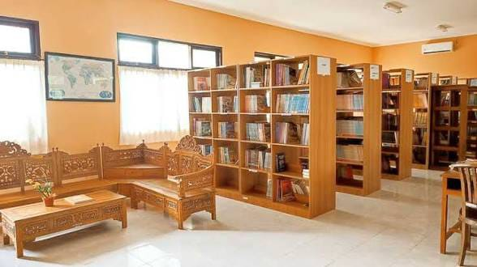
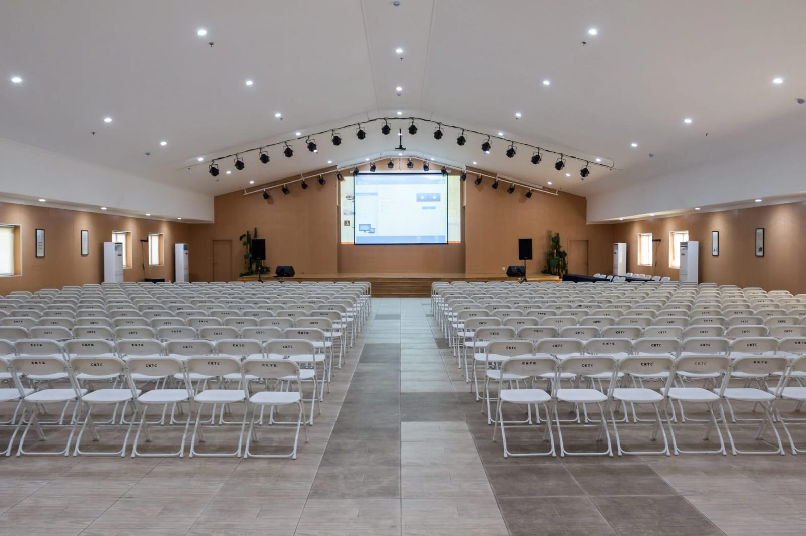
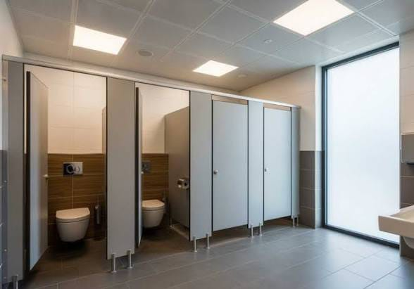

Profil Sekolah


SMA Handayani 1 Pameungpeuk merupakan sekolah swasta yang berdiri sejak 1979 yang ter-akreditasi "A" dan menjadi pilihan utama bagi siswa yang ingin melanjutkan pendidikan ke perguruan tinggi ternama.
Pencapaian


SMA Handayani 1 Pameungpeuk sudah meluluskan banyak siswa ke PTN yang top di Indonesia seperti Universitas Indonesia, Institut Teknologi Bandung, Universitas Gadjah Mada, dan masih banyak lagi.
Program Unggulan
Agora Dialektika
Program debat mingguan yang membedah isu-isu dunia terkini. Melatih murid berpikir kritis, berwawasan luas, dan mahir berbicara di depan umum (public speaking) agar memiliki mental baja serta jawaban yang berbobot saat seleksi PTN.
Cendekia Mahardika
Program pendanaan penuh dari sekolah agar murid bisa mengambil sertifikasi resmi bertaraf nasional/internasional secara gratis (seperti TOEFL, data science, atau public speaking). Membuat portofolio murid terlihat elite dan jauh melampaui rata-rata siswa SMA saat mendaftar jalur prestasi.
Grandmaster UTBK Drill
Memindahkan atmosfer bimbingan belajar (bimbel) mahal langsung ke dalam sekolah dengan menghadirkan latihan bedah soal level dewa (HOTS) serta ujian mandiri PTN sejak kelas 10 secara gratis. Dipadukan dengan Try Out mingguan berbasis komputer yang terukur, siswa dilatih memiliki kecepatan berpikir di atas rata-rata dan mental baja di bawah tekanan waktu, sehingga mereka otomatis menjadi siswa yang tangguh dan siap menyapu bersih nilai tertinggi di UTBK.
Fasilitas




1. Wifi di setiap ruangan
2. Laboratorium Komputer
3. Laboratorium kimia
4. Lapangan olahraga
5. Perpustakaan
6. Ruang Kesenian
7. Ruang Kesehatan
8. Ruang Bimbingan Konseling
9. Ruang Kelas Ber-AC
10. Mushola
11. Kantin
12. Area Parkir Luas
13. CCTV di seluruh area sekolah
14. Aula serbaguna
15. Toilet bersih dan terawat
16. Ruang OSIS
Kontak
Alamat: Jl. Raya Banjaran No. 595, Kecamatan Pameungpeuk, Kabupaten Bandung, Jawa Barat 40382
Telepon: (021) 12345678
Email: info@haspajuara.sch.id